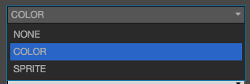
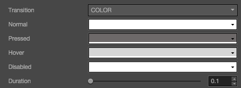
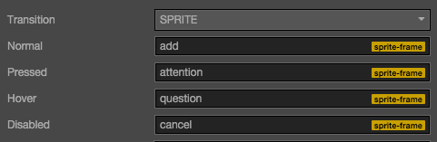
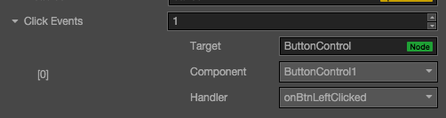

Button（按钮）组件参考
Button 组件可以响应用户的点击操作，当用户点击 Button 时，Button 自身会有状态变化。另外，Button 还可以让用户在完成点击操作后响应一个自定义的行为。


点击属性检查器下面的添加组件按钮，然后从添加 UI 组件中选择Button，即可添加 Button 组件到节点上。
Button 属性
| 属性 | 功能说明 |
|---|---|
| interactable | 布尔类型，设为 false 时，则 Button 组件进入禁用状态。 |
| Transition | 枚举类型，包括 NONE, COLOR 和 SPRITE。每种类型对应不同的 Transition 设置。详情见Button Transition章节。 |
| Click Event | 列表类型，默认为空，用户添加的每一个事件由节点引用，组件名称和一个响应函数组成。详情见Button 事件章节 |
Button Transition
Button 的 Transition 用来指定当用户点击 Button 时的状态表现。目前主要有 NONE，COLOR 和 SPRITE。

Color Transition

| 属性 | 功能说明 |
|---|---|
| Normal | Button 在 Normal 状态下的颜色。 |
| Pressed | Button 在 Pressed 状态下的颜色。 |
| Hover | Button 在 Hover 状态下的颜色。 |
| Disabled | Button 在 Disabled 状态下的颜色。 |
| Duration | Button 状态切换需要的时间间隔。 |
Sprite Transition

| 属性 | 功能说明 |
|---|---|
| Normal | Button 在 Normal 状态下的 SpriteFrame。 |
| Pressed | Button 在 Pressed 状态下的 SpriteFrame。 |
| Hover | Button 在 Hover 状态下的 SpriteFrame。 |
| Disabled | Button 在 Disabled 状态下的 SpriteFrame。 |
Button 事件

| 属性 | 功能说明 |
|---|---|
| Target | 带有脚本组件的节点。 |
| Component | 脚本组件名称。 |
| Handler | 指定一个回调函数，当用户点击 Button 并释放时会触发此函数。 |
详细说明
Button 目前只支持 On Click 事件，即当用户点击并释放 Button 时才会触发相应的回调函数。
继续前往 ProgressBar 组件参考 。